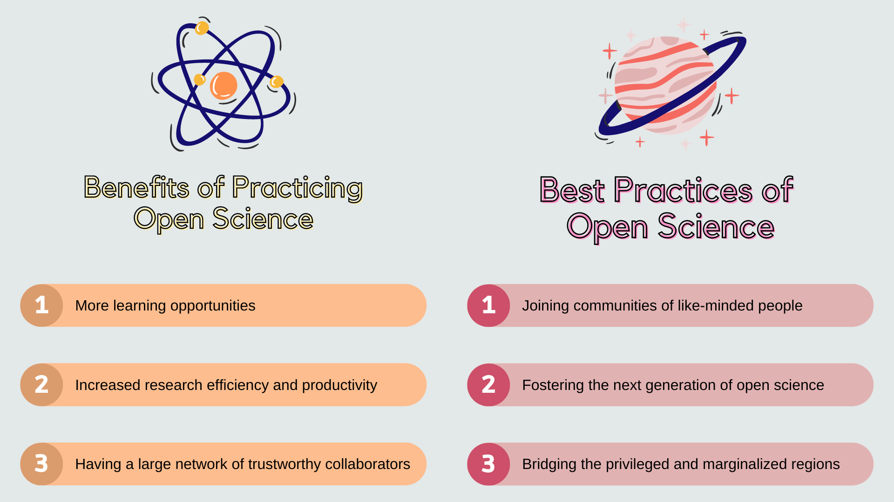
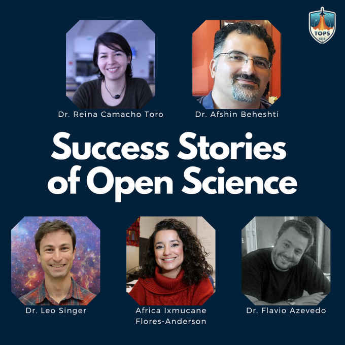

Identifying Barriers to Adopting Open Science Practices
At NASA, I investigated how to mitigate barriers to practicing open science—a movement to create more reproducible, inclusive, equitable, and accessible research—in various scientific communities.
Photo created through the James Webb Space Telescope by NASA & Space Telescope Science Institute
The Problem
Researchers understand that open science is needed and promotes good research, but systematic and psychological barriers exist for them to start open science practices.
Research Questions
What are the benefits of practicing open science?
What are the best practices to start open science practices?
The Goal
Find out how researchers can benefit from practicing open science.
Investigate how researchers can overcome barriers to practicing open science.
Research Design
Developed a semi-structured interview protocol.
Distributed a sign-up form across multiple social media platforms and listservs.
Reviewed candidacy based on open science practices.
Scheduled 1-hour in-depth online interviews for selected candidates.
In total, 5 in-depth online interviews were conducted.
Analysis
Interviews were recorded and transcribed through Microsoft Teams.
Auto-transcribed conversations were corrected manually.
Thematic analysis was conducted by repeated reading, revisiting the recording, making notes to extract codes, and clustering the codes to extract coherent themes.
Key Findings

(1) Benefits of practicing open science:
Researchers are exposed to various learning opportunities.
People promote different research ideas and build a nice comprehensive story together. All the pieces of the puzzle start to come together. [...] When you're isolated, you never see that.
by Dr. Afshin Beheshti
Researchers can experience increased research efficiency and productivity.
Open science makes science more efficient. You don't need to reinvent the wheel when you share the resources, codes, and results with others.
by Dr. Reina Camacho Toro
Researchers can grow a large network of trustworthy collaborators.
I'll encounter people at conferences, and they'll say, “Oh, I've heard your name.” They've heard my name because they used my software. So it's a great way to make connections with people.
by Dr. Leo Singer
(2) Ways to overcome barriers to open science:
Participating in communities of like-minded people to gain technical and emotional support.
I would say that joining a community that speaks to your heart and your science would be the way to go. Through community, we learn how to best conduct open scholarship on a day-to-day basis.
by Dr. Flavio Azevedo
Fostering the next generation by training early career researchers.
I think there are many myths and fears about open science that can be handled by offering training and by having open discussions to raise awareness about what open science means in one’s community.
by Dr. Reina Camacho Toro
Bridging the privileged and marginalized regions.
Currently, there is a huge gap between how science benefits the Global North and Global South. [...] Having a community to talk about issues, ask for help, and see other people asking for help can have a positive effect.
by Dr. Flavio Azevedo
Recommendations
NASA should grow and manage communities for researchers in various scientific fields to learn about open science tools and processes through self and peer learning.
Promote success and failure stories of open science practitioners such that other researchers can follow the steps without reinventing the wheel and raise awareness of the benefits of open science practices.
End Results
I produced 5 blog posts about success stories of open science.
I produced social media language and images to go with the posts.
Impact
I provided examples of open science practices that can be used to create effective content strategies to promote open science.
I produced blog posts that can be used to advertise open science mindsets via social media.
I provided materials that can be integrated in an online curriculum under development aimed at training researchers on open science.
Lessons I Learned
I would start contacting interviewees earlier, as people are oftentimes on vacation, especially during the summer times, and the original plan can easily derail due to different schedules.
If certain words or concepts are not clear, it's important to clarify them during the interview rather than asking the interviewee later when their memory is still fresh.
Learn More
⬇ Click below to check out my blog posts produced based on the interviews I conducted.
